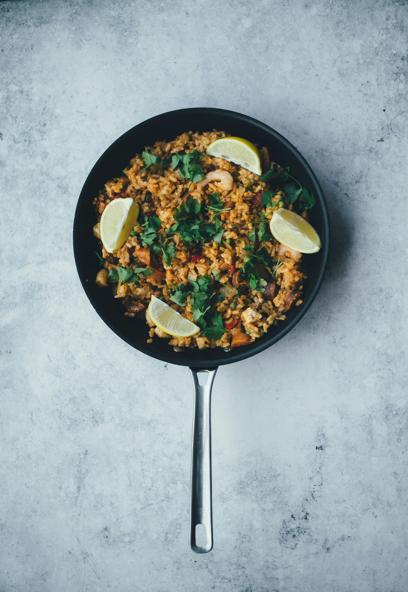

Paella

Description
Paella is a vibrant and flavorful Spanish dish that originated
in the region of Valencia. This iconic one-pan meal combines a medley
of ingredients cooked together with saffron-infused rice, which gives
the dish its characteristic golden color and aromatic depth.
Traditional paella features a diverse assortment of proteins, such as
succulent chicken, tender rabbit, and fresh seafood like shrimp,
mussels, and clams, all simmered with tomatoes, bell peppers, and
green beans. The dish is often finished with a sprinkle of fresh herbs
and a squeeze of lemon, creating a delightful harmony of tastes and
textures. Paella is celebrated for its communal nature, often
prepared in a large, shallow pan that is shared among friends
and family, making it a centerpiece of festive gatherings and
culinary tradition.
Ingredients
- Olive Oil
- Onion
- Garlic Clover
- Red Bell Peppper
- Tomatoes
- 1 1/2 cup of rice
- Saffron threads
- 300 grams of chicken
- 3000 grams of Seafood mix
- 4 cups of chicken or vegetable broth
Steps
- Prepare Ingredients: Chop the onion, garlic, and red bell pepper.
Cut the chicken into bite-sized pieces and ensure your seafood mix is ready.
- Heat the Oil: In a large paella pan or a wide, heavy-bottomed skillet, heat
2-3 tablespoons of olive oil over medium heat.
- Sauté Vegetables: Add the chopped onion and red bell pepper to the pan. Sauté for about 5 minutes, or until the onion is translucent and the bell pepper
has softened. Add the minced garlic and cook for another 1-2 minutes until fragrant.
- Add Tomatoes: Stir in the chopped tomatoes and cook for another 3-4 minutes, allowing
the mixture to thicken slightly.
- Cook Chicken: Add the chicken pieces to the pan. Cook, stirring
occasionally, until the chicken is browned on all sides and cooked through.
- Add Rice and Saffron: Stir in the paella rice, making sure it is well coated with the oil and tomato mixture.
Add the saffron threads (or saffron powder) and stir to distribute evenly.
- Add Broth: Pour in the chicken or vegetable broth. Bring the mixture to a boil,
then reduce the heat to low and simmer without stirring, for about 15 minutes.
- Add Seafood: Arrange the seafood mix on top of the rice. Continue to cook, covered, for an additional 10-15 minutes,
or until the seafood is cooked and the rice has absorbed most of the liquid.
- Rest the Paella: Remove the pan from heat and let it rest for about
5 minutes to allow the flavors to meld.
- Serve: Garnish with lemon wedges for squeezing over the paella, and serve
directly from the pan.